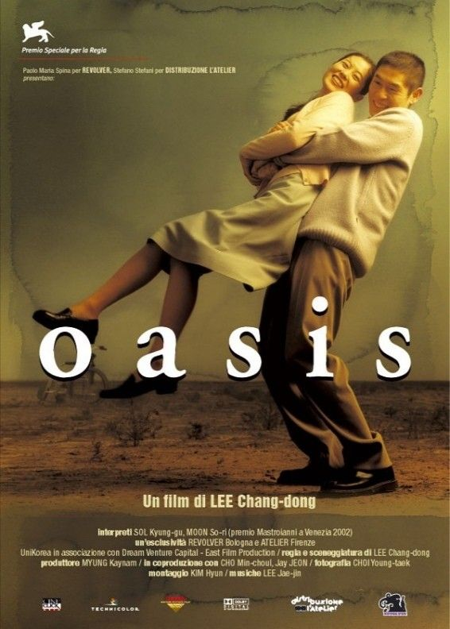

Oasis
Diretto da: Lee Chang-dong
Data di rilascio: 15 Agosto 2002
Incassi: Informazioni non disponibili
"Oasis" è un film del 2002 diretto da Lee Chang-dong, una storia d'amore non convenzionale che esplora la complessità della disabilità, dell'emarginazione e del desiderio umano.
Trama:
Il film racconta la storia di Jong-du, un uomo con un lieve ritardo mentale, che appena uscito di prigione cerca di reintegrarsi nella società. Jong-du entra in contatto con Gong-ju, una donna con una grave paralisi cerebrale, emarginata dalla sua stessa famiglia. Nonostante le loro differenze e le sfide che affrontano, i due sviluppano una connessione unica e profonda, costruendo un rapporto che sfida i pregiudizi sociali e le convenzioni culturali.
Con "Oasis", Lee Chang-dong esplora temi di amore, compassione e accettazione, mettendo in luce la forza delle emozioni umane anche nelle circostanze più difficili. La pellicola è nota per la sua rappresentazione sincera e non idealizzata della disabilità, offrendo una narrazione commovente e viscerale.